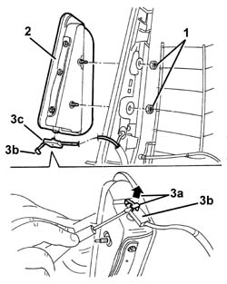
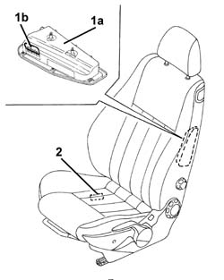
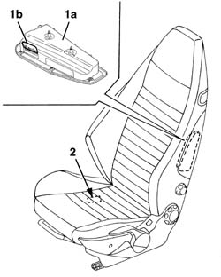

5580C44 front side bag module one lh or rh r r
- Path
- Procedures > 55 ELECTRICAL EQUIPMENT > 5580 SPECIAL ACCESSORIES > 5580C air bag system > 5580C44 front side bag module one lh or rh r r
- Kind
- repair procedure (removal / refitting; the operation number is the code)
- Applies to
- all engines; all production periods
- Interactive page
- https://sloeber94.github.io/elrnDB-a147/en/#/3025615
Applies to: all engines; all production periods
Place the ignition key in the OFF position and extract it;
- Disconnect the battery leads and insulate.
- Wait for 10 minutes before continuing.
Applies to: all engines; all production periods
 Removing
Removing
 Refitting
Refitting7045A10 l/h or r/h front seat (one) - r+r
7045A25 squab lumbar knob - r r
7045A84 Front set BACKREST COVER - R.R. with seat removed
1. Undo the Air Bag module nuts.
2. Move the Air Bag module slightly.
3. Lift the safety retainer (3a) then remove the electrical connection (3b).

Applies to: all engines; all production periods
Place the Air Bag module in the special cupboard, resting it on a free surface with the flat surface facing upwards.
Applies to: all engines; all production periods
Refitting
RemovingObserve the following precaution.
If a new module is being fitted, attach the labels as described below.
1. Detach the removable part (1b) of the adhesive label from the new module (1a). Place a copy of the label (1b) in a specific file containing the vehicle details (model, registration data, chassis number) and the serial number of the old module. This file should be kept for future checks.
2. Apply the detachable part of the original label (1b) to the bottom of the seat, where there are already similar labels for the seat, squab cover and Air Bag wiring.

Applies to: all engines; all production periods
Check visually for deformation or cracks in the seat frame.
Check that the impact slots on the lower sides of the squabs are not deformed.
Check that the welds and rivets on the joints between squab and cushion are undamaged.
Check the squab for torsional deformation by measuring the diagonals of the squab frame. Check that the measurements are the same and that the diagonals intersect at the centre of the squab.
Move the seat through all its various settings to ensure that movements take place without binding or noise.
Connect the electrical connection and engage the safety retainer.
Refit the Air Bag module.
Tighten the nuts to the recommended torque.
 | Fastening | Component | Ø | Value (daNm) |
|---|---|---|---|---|
- | Nut | FRONT SIDE AIR BAG MODULE ASSEMBLY. | M6 | 0.8 |
7045A84 Front set BACKREST COVER - R.R. with seat removed
7045A25 squab lumbar knob - r r
7045A10 l/h or r/h front seat (one) - r+r
Check the operation of the system using the Examiner or another tester.
Applies to: all engines; all production periods
Place the ignition key in the OFF position and extract it;
- Disconnect the battery leads and insulate.
- Wait for 10 minutes before continuing.
Applies to: all engines; all production periods; only with equipment: GTA
Removing
Refitting7045A25 squab lumbar knob - r r
7045A43 seat exterior guard - r r
7045A44 seat interior guard - r r
7045A98 front seat rear pouch panel, lh or rh - r r
7045A84 Front set BACKREST COVER - R.R. with seat removed
1. Undo the Air Bag module nuts.
2. Move the Air Bag module slightly.
3. Lift the safety retainer (3a) then remove the electrical connection (3b).
Applies to: all engines; all production periods; only with equipment: GTA
Place the Air Bag module in the special cupboard, resting it on a free surface with the flat surface facing upwards.
Applies to: all engines; all production periods; only with equipment: GTA
Refitting
RemovingObserve the following precaution.
If a new module is being fitted, attach the labels as described below.
1. Detach the removable part (1b) of the adhesive label from the new module (1a). Place a copy of the label (1b) in a specific file containing the vehicle details (model, registration data, chassis number) and the serial number of the old module. This file should be kept for future checks.
2. Apply the detachable part of the original label (1b) to the bottom of the seat, where there are already similar labels for the seat, squab cover and Air Bag wiring.

Applies to: all engines; all production periods; only with equipment: GTA
Check visually for deformation or cracks in the seat frame.
Check that the impact slots on the lower sides of the squabs are not deformed.
Check that the welds and rivets on the joints between squab and cushion are undamaged.
Check the squab for torsional deformation by measuring the diagonals of the squab frame. Check that the measurements are the same and that the diagonals intersect at the centre of the squab.
Move the seat through all its various settings to ensure that movements take place without binding or noise.
Connect the electrical connection and engage the safety retainer.
Refit the Air Bag module.
Tighten the nuts to the recommended torque.
| Fastening | Component | Ø | Value (daNm) |
|---|---|---|---|---|
- | Nut | FRONT SIDE AIR BAG MODULE ASSEMBLY. | M6 | 0.8 |
7045A84 Front set BACKREST COVER - R.R. with seat removed
7045A25 squab lumbar knob - r r
7045A10 l/h or r/h front seat (one) - r+r
Check the operation of the system using the Examiner or another tester.
Topics linked from this page (8)
- 5580C air bag system
- 7045A10 l/h or r/h front seat (one) - r+r
- 7045A24 squab knob - r r
- 7045A25 squab lumbar knob - r r
- 7045A43 seat exterior guard - r r
- 7045A44 seat interior guard - r r
- 7045A84 Front set BACKREST COVER - R.R. with seat removed
- 7045A98 front seat rear pouch panel, lh or rh - r r